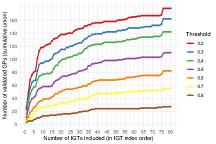
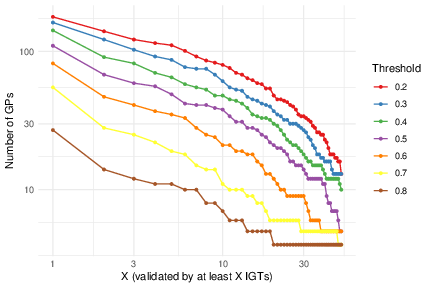
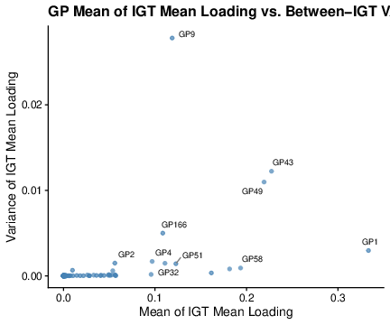
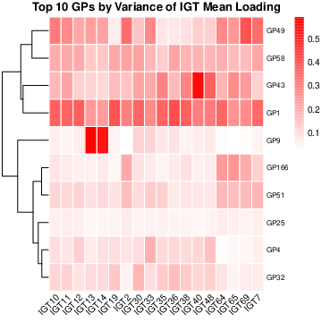

Last updated: 2026-07-03
Checks: 7 0
Knit directory:
immgenT-GP-analysis/analysis/
This reproducible R Markdown analysis was created with workflowr (version 1.7.2). The Checks tab describes the reproducibility checks that were applied when the results were created. The Past versions tab lists the development history.
Great! Since the R Markdown file has been committed to the Git repository, you know the exact version of the code that produced these results.
Great job! The global environment was empty. Objects defined in the global environment can affect the analysis in your R Markdown file in unknown ways. For reproduciblity it’s best to always run the code in an empty environment.
The command set.seed(1) was run prior to running the
code in the R Markdown file. Setting a seed ensures that any results
that rely on randomness, e.g. subsampling or permutations, are
reproducible.
Great job! Recording the operating system, R version, and package versions is critical for reproducibility.
Nice! There were no cached chunks for this analysis, so you can be confident that you successfully produced the results during this run.
Great job! Using relative paths to the files within your workflowr project makes it easier to run your code on other machines.
Great! You are using Git for version control. Tracking code development and connecting the code version to the results is critical for reproducibility.
The results in this page were generated with repository version 8ac7f9f. See the Past versions tab to see a history of the changes made to the R Markdown and HTML files.
Note that you need to be careful to ensure that all relevant files for
the analysis have been committed to Git prior to generating the results
(you can use wflow_publish or
wflow_git_commit). workflowr only checks the R Markdown
file, but you know if there are other scripts or data files that it
depends on. Below is the status of the Git repository when the results
were generated:
Ignored files:
Ignored: analysis/.DS_Store
Ignored: analysis/.Rhistory
Ignored: analysis/assets/.DS_Store
Ignored: code 2/
Ignored: code/pipeline 2/
Ignored: data
Ignored: figures/final-selected/.DS_Store
Ignored: figures/final-selected/bits/.DS_Store
Ignored: figures/final-selected/bits/Figure 1/.DS_Store
Ignored: figures/final-selected/bits/Figure 2/.DS_Store
Ignored: figures/final-selected/bits/Figure 3/.DS_Store
Ignored: figures/final-selected/bits/Figure 4/.DS_Store
Ignored: figures/final-selected/bits/Figure 6/.DS_Store
Ignored: figures/final-selected/bits/Figure 7/.DS_Store
Ignored: figures/final-selected/bits/Figure S1/.DS_Store
Ignored: figures/final-selected/bits/Figure S2/.DS_Store
Ignored: figures/final-selected/bits/Figure S3/.DS_Store
Ignored: figures/final-selected/bits/Figure S6/.DS_Store
Ignored: figures/final-selected/bits/Figure S7/.DS_Store
Ignored: figures/generated/Figure 1 2/
Ignored: figures/generated/Figure 5/
Ignored: figures/generated/Figure 7/
Ignored: figures/generated/Figure 8/
Ignored: figures/generated/Figure 9/
Ignored: figures/generated/Figure S1 2/
Ignored: figures/generated/Figure S2 2/
Ignored: figures/generated/Figure S3 2/
Ignored: figures/generated/Figure S6 2/
Unstaged changes:
Modified: code/R/setup_data.R
Modified: code/README.md
Modified: code/pipeline/01_extract_data.R
Modified: figures/generated/Figure 1/1A.pdf
Modified: figures/generated/Figure 1/1C.pdf
Modified: figures/generated/Figure 1/1D.pdf
Modified: figures/generated/Figure 1/1E.pdf
Modified: figures/generated/Figure 1/1F.pdf
Modified: figures/generated/Figure 1/1G.pdf
Modified: figures/generated/Figure 1/1H.pdf
Modified: figures/generated/Figure 1/1I.pdf
Modified: figures/generated/Figure 1/hist_active_cells_per_GP.pdf
Modified: figures/generated/Figure 1/hist_active_genes_prop_per_GP.pdf
Modified: figures/generated/Figure 1/scatter_e_active_cells_vs_genes.pdf
Modified: figures/generated/Figure 2/2A.pdf
Modified: figures/generated/Figure 2/2B.pdf
Modified: figures/generated/Figure 2/2C.pdf
Modified: figures/generated/Figure 2/2D.pdf
Modified: figures/generated/Figure 2/2E.pdf
Modified: figures/generated/Figure 2/2F.pdf
Modified: figures/generated/Figure 2/2G.pdf
Modified: figures/generated/Figure 2/2H.pdf
Modified: figures/generated/Figure 2/2I.pdf
Modified: figures/generated/Figure 2/2J.pdf
Modified: figures/generated/Figure 2/2K.pdf
Modified: figures/generated/Figure 2/2L.pdf
Modified: figures/generated/Figure 2/2M.pdf
Modified: figures/generated/Figure 3/3c.pdf
Modified: figures/generated/Figure 3/3d.pdf
Modified: figures/generated/Figure 3/3e.pdf
Modified: figures/generated/Figure 3/3f.pdf
Modified: figures/generated/Figure 3/3g.pdf
Modified: figures/generated/Figure 4/4a.pdf
Modified: figures/generated/Figure 4/4b.pdf
Modified: figures/generated/Figure 4/4c.pdf
Modified: figures/generated/Figure 4/4d.pdf
Modified: figures/generated/Figure 4/4e.pdf
Modified: figures/generated/Figure 6/6b.pdf
Modified: figures/generated/Figure 6/6c.pdf
Modified: figures/generated/Figure 6/6d.pdf
Modified: figures/generated/Figure 6/6e.pdf
Modified: figures/generated/Figure 6/6f.pdf
Modified: figures/generated/Figure 6/6g.pdf
Modified: figures/generated/Figure 6/6h.pdf
Modified: figures/generated/Figure 6/6i.pdf
Modified: figures/generated/Figure 6/6j.pdf
Modified: figures/generated/Figure 6/6k.pdf
Modified: figures/generated/Figure S1/S1A.pdf
Modified: figures/generated/Figure S1/S1B.pdf
Modified: figures/generated/Figure S1/S1C.pdf
Modified: figures/generated/Figure S1/S1D.pdf
Modified: figures/generated/Figure S2/S2A.pdf
Modified: figures/generated/Figure S2/S2B.pdf
Modified: figures/generated/Figure S2/S2C.pdf
Modified: figures/generated/Figure S3/s3c.pdf
Modified: figures/generated/Figure S3/s3d.pdf
Modified: figures/generated/Figure S3/s3e.pdf
Modified: figures/generated/Figure S3/s3f.pdf
Modified: figures/generated/Figure S3/s3g.pdf
Modified: figures/generated/Figure S3/s3h.pdf
Modified: script/Figure1.R
Modified: script/Figure2.R
Modified: script/Figure3.R
Modified: script/Figure4.R
Modified: script/Figure6.R
Modified: script/FigureS1.R
Modified: script/FigureS2.R
Modified: script/FigureS3.R
Modified: script/FigureS6.R
Modified: script/README.md
Modified: script/TableS1.R
Note that any generated files, e.g. HTML, png, CSS, etc., are not included in this status report because it is ok for generated content to have uncommitted changes.
These are the previous versions of the repository in which changes were
made to the R Markdown (analysis/FigureS1.Rmd) and HTML
(docs/FigureS1.html) files. If you’ve configured a remote
Git repository (see ?wflow_git_remote), click on the
hyperlinks in the table below to view the files as they were in that
past version.
| File | Version | Author | Date | Message |
|---|---|---|---|---|
| Rmd | 8ac7f9f | Ziang Zhang | 2026-07-03 | Add data provenance notes to each script; remove conversational |
| Rmd | f9db962 | Ziang Zhang | 2026-07-02 | Simplify layout: drop old code/script folders, rename |
| html | c6e5086 | Ziang Zhang | 2026-07-02 | Build site. |
| html | 5a79883 | Ziang Zhang | 2026-07-02 | Build site. |
| Rmd | 2b0e445 | Ziang Zhang | 2026-07-02 | Fix GitHub source links to point at the new |
| html | cf1d0ac | Ziang Zhang | 2026-07-02 | Build site. |
| Rmd | 06b2461 | Ziang Zhang | 2026-07-02 | Initial commit: immgenT-GP-analysis |
| html | 06b2461 | Ziang Zhang | 2026-07-02 | Initial commit: immgenT-GP-analysis |
All panels are produced by script/FigureS1.R.
The code below is shown for reference (not re-executed on this page);
the images are its pre-rendered output. Panels A/B reuse a cached
per-IGT cosine-similarity score matrix
(data/igt_specific_cosine_scores.csv); see
code/pipeline/05_igt_validation.R for how that matrix
itself is produced (a much heavier, cluster-scale computation).
# Figure S1. GP reproducibility across IGTs.
#
# Panels produced (see figures/final-selected/bits/Figure S1/FigureS1_caption.md
# for the full caption text):
# S1A Cumulative number of GPs validated (cosine >= threshold, thresholds
# 0.2-0.8) as IGTs are added one at a time, in IGT index order.
# S1B Number of GPs validated by at least X IGTs, vs X (log-log), for the
# same thresholds.
# S1C Between-IGT variability: each GP's mean-of-per-IGT-mean-loading (x)
# vs. variance-of-per-IGT-mean-loading (y), spleen-standard subset.
# S1D Heatmap of per-IGT mean loading for the 10 highest-variance GPs from
# S1C (IGTs with >= 500 spleen-standard cells only).
#
# Source: S1A/S1B ported from Figure_Saturation.R; S1C/S1D from
# Figure_batch.R (panels a/b only -- that script's `plot_gp_loading()`
# helper is defined but never called for a saved output, so it's dropped).
#
# S1A/S1B reuse the per-IGT cosine-matching score matrix
# (data/igt_specific_cosine_scores.csv) rather than recomputing it here --
# recomputing requires Hungarian-matching each of the ~80 per-IGT
# refactorizations in data/igt_specific/*.qs against the full model, which is
# the job of code/pipeline/05_igt_validation.R (run once upstream).
#
# Required inputs (data/) -- see code/README.md's "Data provenance" table
# for the full picture:
# igt_specific_cosine_scores.csv [code/pipeline/05_igt_validation.R]
# L_pm_filtered.rds [gap, no producer script here]
# igt1_96_..._ADTonly.Rds [primary input Seurat object]
library(dplyr)
library(tidyr)
library(ggplot2)
library(pheatmap)
data_path <- "data/"
figure_path <- "figures/generated/Figure S1/"
gp_label <- function(x) sub("^K(\\d+)$", "GP\\1", x)Panels A and B both use the cached per-IGT cosine score matrix:
# ============================================================
# S1A/S1B: load the cached per-IGT cosine score matrix
# (GPs x IGTs; produced by code/pipeline/05_igt_validation.R)
# ============================================================
score_mat <- as.matrix(read.csv(paste0(data_path, "igt_specific_cosine_scores.csv"), row.names = 1, check.names = FALSE))# ============================================================
# S1A: cumulative number of GPs validated as IGTs are added, in IGT-index order
# ============================================================
igt_idx <- as.integer(gsub("^IGT", "", colnames(score_mat)))
o <- order(igt_idx)
score_mat_ord <- score_mat[, o, drop = FALSE]
cum_validated_counts <- function(score_mat_ord, threshold) {
validated <- score_mat_ord >= threshold
ever_validated <- t(apply(validated, 1, cummax)) # 200 x nIGT logical
colSums(ever_validated)
}
plot_df_a <- lapply(thresholds, function(t) {
y <- cum_validated_counts(score_mat_ord, t)
data.frame(n_IGTs_included = seq_along(y), validated_GPs = y, threshold = factor(t))
}) %>% bind_rows()
p_S1A <- ggplot(plot_df_a, aes(x = n_IGTs_included, y = validated_GPs, color = threshold)) +
geom_line(linewidth = 1) +
geom_point(size = 1) +
labs(x = "Number of IGTs included (in IGT index order)", y = "Number of validated GPs (cumulative union)", color = "Threshold") +
theme_minimal() +
scale_color_brewer(palette = "Set1") +
scale_x_continuous(breaks = seq(0, ncol(score_mat_ord), by = 5)) +
scale_y_continuous(breaks = seq(0, max(plot_df_a$validated_GPs), by = 20))
ggsave(paste0(figure_path, "S1A.pdf"), plot = p_S1A, width = 6, height = 4)
| Version | Author | Date |
|---|---|---|
| 06b2461 | Ziang Zhang | 2026-07-02 |
Fig. S1A. GPs were tested for reproducibility in individual datasets (IGTs): for each IGT a dataset-specific EBMF factorization was computed and its factors were matched to the global GPs by Hungarian assignment on the cosine similarity of gene-score vectors (restricted to shared genes, with columns scaled), and a GP is counted as “validated” in an IGT when this cosine similarity reaches a given threshold. Adding IGTs one at a time in index order, the curves show the cumulative number of GPs (of 200) validated in at least one IGT included so far, for cosine thresholds of 0.2-0.8.
# ============================================================
# S1B: number of GPs validated by at least X IGTs, vs X (log-log)
# ============================================================
thresholds <- seq(0.2, 0.8, by = 0.1)
X_grid <- 1:50
plot_df_b <- tidyr::crossing(threshold = thresholds, X = X_grid) %>%
mutate(n_GP = purrr::map2_int(threshold, X, \(t, x) {
rowSums(score_mat >= t, na.rm = TRUE) |> (\(v) sum(v >= x))()
}))
p_S1B <- ggplot(plot_df_b, aes(x = X, y = n_GP, group = factor(threshold))) +
geom_line() +
geom_point(size = 1) +
scale_y_log10() +
scale_x_log10() +
labs(x = "X (validated by at least X IGTs)", y = "Number of GPs", color = "Threshold") +
aes(color = factor(threshold)) +
theme_minimal() +
scale_color_brewer(palette = "Set1")
ggsave(paste0(figure_path, "S1B.pdf"), plot = p_S1B, width = 6, height = 4)
| Version | Author | Date |
|---|---|---|
| 06b2461 | Ziang Zhang | 2026-07-02 |
Fig. S1B. Using the same per-IGT cosine matching, the number of GPs validated by at least X IGTs as a function of X (both axes log-scaled), for thresholds of 0.2-0.8.
# ============================================================
# Load data for S1C/S1D
# ============================================================
L_pm_filtered <- readRDS(paste0(data_path, "L_pm_filtered.rds"))
seurat_meta <- readRDS(paste0(data_path, "igt1_96_withtotalvi20260206_clean_ADTonly.Rds"))@meta.data
seurat_meta_filtered <- seurat_meta[rownames(L_pm_filtered), ]
seurat_meta_filtered_spleen <- seurat_meta_filtered %>% filter(spleen_standard == TRUE)
all_gps <- paste0("K", 1:200)
selected_igts <- names(table(seurat_meta_filtered_spleen$IGT))[table(seurat_meta_filtered_spleen$IGT) >= 500]# ============================================================
# S1C: GP mean-of-IGT-mean-loading vs. variance-of-IGT-mean-loading (spleen)
# ============================================================
common_cells_c <- intersect(rownames(L_pm_filtered), rownames(seurat_meta_filtered_spleen))
L_sub_c <- L_pm_filtered[common_cells_c, ]
igt_vec_c <- seurat_meta_filtered_spleen[common_cells_c, "IGT"]
igt_levels_c <- unique(igt_vec_c)
igt_mat_c <- do.call(rbind, lapply(igt_levels_c, function(igt) colMeans(L_sub_c[igt_vec_c == igt, , drop = FALSE])))
gp_igt_var <- apply(igt_mat_c, 2, var)
gp_overall <- colMeans(igt_mat_c)
gp_stats <- data.frame(GP = colnames(L_sub_c), x = gp_overall, y = gp_igt_var) %>%
arrange(desc(y)) %>%
mutate(label = ifelse(row_number() <= 10, gp_label(as.character(GP)), ""))
p_S1C <- ggplot(gp_stats, aes(x = x, y = y, label = label)) +
geom_point(size = 1.5, alpha = 0.7, color = "steelblue") +
ggrepel::geom_text_repel(size = 3, box.padding = 0.4, max.overlaps = Inf, segment.color = "grey50") +
cowplot::theme_cowplot() +
labs(
title = "GP Mean of IGT Mean Loading vs. Between-IGT VAR",
x = "Mean of IGT Mean Loading",
y = "Variance of IGT Mean Loading"
)
ggsave(paste0(figure_path, "S1C.pdf"), plot = p_S1C, width = 6, height = 5, dpi = 300)
| Version | Author | Date |
|---|---|---|
| 06b2461 | Ziang Zhang | 2026-07-02 |
Fig. S1C. Between-IGT variability of GP loadings, computed on a standard spleen subset used for this purpose. Each GP’s mean loading is computed within every IGT; each point is a GP, plotting the mean across IGTs of these per-IGT mean loadings (x-axis) against their variance across IGTs (y-axis). The ten GPs with the highest between-IGT variance are labeled.
# ============================================================
# S1D: heatmap of per-IGT mean loading for the top-10 variance GPs from S1C
# (IGTs with >= 500 spleen-standard cells only)
# ============================================================
top10_var_gps <- names(sort(gp_igt_var, decreasing = TRUE))[1:10]
spleen_cells_act <- intersect(rownames(L_pm_filtered), rownames(seurat_meta_filtered_spleen))
igt_vec_act <- seurat_meta_filtered_spleen[spleen_cells_act, "IGT"]
igt_mean_mat_act <- do.call(rbind, lapply(selected_igts, function(igt) {
cells_i <- spleen_cells_act[igt_vec_act == igt]
colMeans(L_pm_filtered[cells_i, all_gps, drop = FALSE])
}))
rownames(igt_mean_mat_act) <- selected_igts
plot_mat <- t(igt_mean_mat_act[, top10_var_gps, drop = FALSE])
plot_mat[plot_mat < 0] <- 0
rownames(plot_mat) <- gp_label(rownames(plot_mat))
pdf(paste0(figure_path, "S1D.pdf"), width = 5, height = 5)
pheatmap(
plot_mat,
cluster_rows = TRUE,
cluster_cols = FALSE,
main = "Top 10 GPs by Variance of IGT Mean Loading",
color = colorRampPalette(c("white", "red"))(100),
border_color = "white",
fontsize_row = 8,
angle_col = 45
)
dev.off()
| Version | Author | Date |
|---|---|---|
| 06b2461 | Ziang Zhang | 2026-07-02 |
Fig. S1D. Heatmap of the per-IGT mean loading (same standard spleen subset, restricted to IGTs with >= 500 cells) for the ten GPs with the highest between-IGT variance from (C). Rows (GPs) are hierarchically clustered; color runs from white (low) to red (high mean loading).
sessionInfo()R version 4.5.1 (2025-06-13)
Platform: aarch64-apple-darwin20
Running under: macOS Sequoia 15.6.1
Matrix products: default
BLAS: /System/Library/Frameworks/Accelerate.framework/Versions/A/Frameworks/vecLib.framework/Versions/A/libBLAS.dylib
LAPACK: /Library/Frameworks/R.framework/Versions/4.5-arm64/Resources/lib/libRlapack.dylib; LAPACK version 3.12.1
locale:
[1] en_CA/en_CA/en_CA/C/en_CA/en_CA
time zone: Asia/Tokyo
tzcode source: internal
attached base packages:
[1] stats graphics grDevices utils datasets methods base
loaded via a namespace (and not attached):
[1] vctrs_0.7.3 cli_3.6.6 knitr_1.50 rlang_1.2.0
[5] xfun_0.55 stringi_1.8.7 otel_0.2.0 promises_1.5.0
[9] jsonlite_2.0.0 workflowr_1.7.2 glue_1.8.1 rprojroot_2.1.1
[13] git2r_0.36.2 htmltools_0.5.9 httpuv_1.6.16 sass_0.4.10
[17] rmarkdown_2.30 evaluate_1.0.5 jquerylib_0.1.4 tibble_3.3.0
[21] fastmap_1.2.0 yaml_2.3.12 lifecycle_1.0.5 whisker_0.4.1
[25] stringr_1.6.0 compiler_4.5.1 fs_1.6.6 Rcpp_1.1.1-1.1
[29] pkgconfig_2.0.3 later_1.4.4 digest_0.6.39 R6_2.6.1
[33] pillar_1.11.1 magrittr_2.0.5 bslib_0.9.0 tools_4.5.1
[37] cachem_1.1.0